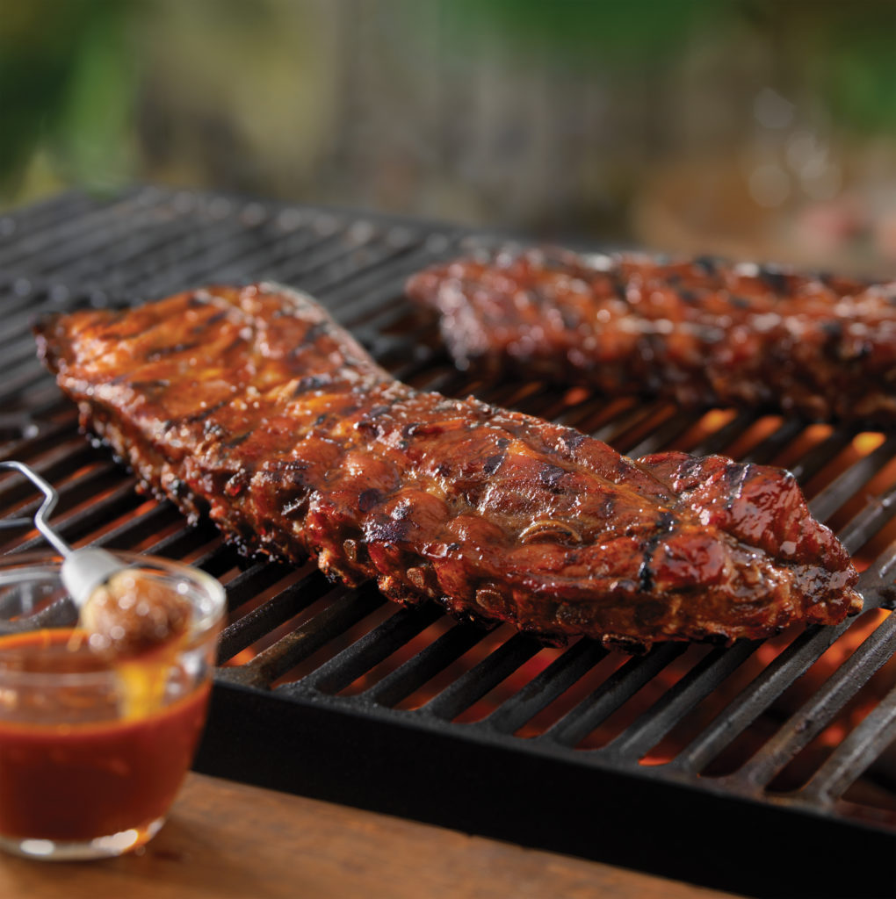

3-2-1 Ribs that fall off the bone

You are going to need to set aside 5-6 hours for these amazing Ribs
Things you will need
- 1 rack of babyback ribs
- Ground Mustard
- Salt and Pepper
- Traeger Pork Rub
- BBQ sauce of your choice
Cooking
- Pre heat smoker to 180
- Remove membrane from ribs
- brush mustard on the ribs
- cover ribs in seasoning
- Salt and pepper ribs
- Put on grill at 180 for 3 hours or until internal temp is 160
- Remove ribs from the grill and tent in tinfoil
- Increase heat to 225 and put ribs on for 2 hours or until internal temp is 204
- Remove ribs and brush with bbq sauce and put back onto the grill until sauce tightens up (usually 30 minuts)